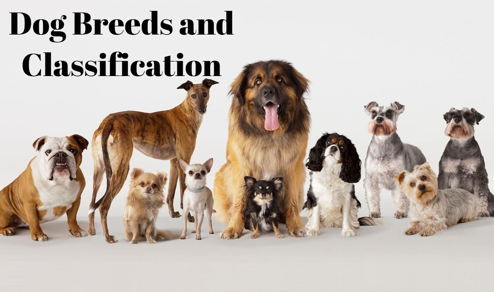
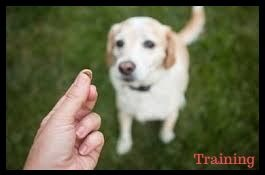
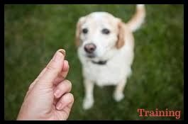

New Dog Owners Guide
Since the beginning of civilisation, we have had our canine companions. They have provided us with company, helped us gather food and resources, and protect us. As humankind has evolved culturally, dogs have remained our best friends. In modern times, they contidnue to provide us with company, and are integral in many parts of scoeity. Some areas that dogs are used in include the police and armed forces, mental health establishments, as tools for the visually impaired, and most widely, to provide company in a household. This website has useful information for new dog owners, and handy tips for veterans. It has all the popular dog breeds recognised by the AKC (American Kennel Club), and a link to that will be found at the bottom of the page.


 

Contact Us
Copyrights reserved@2020-21